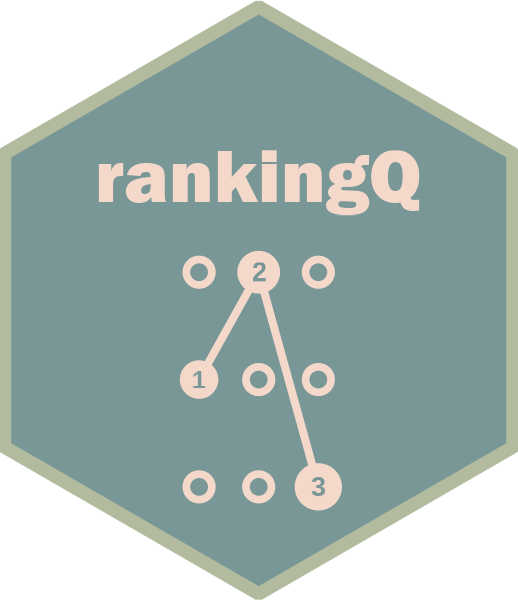

Overview
Survey ranking questions are prone to random responses, where respondents answer carelessly or arbitrarily. rankingQ corrects this measurement error using anchor-ranking items, enabling unbiased estimates of ranking-based quantities such as average ranks, marginal rank probabilities, and pairwise preferences.
rankingQ implements design-based methods for correcting measurement error in survey ranking questions caused by random responding. It provides direct bias correction, inverse-probability weighting (IPW), visualization helpers, and diagnostics for assessing anchor-ranking questions.
For the underlying methodology, see Atsusaka and Kim (2025), “Addressing Measurement Errors in Ranking Questions for the Social Sciences,” Political Analysis, 33(4), 339-360. Visit the package site for vignettes and references.
Installation
Currently, you can install the development version from GitHub:
remotes::install_github("sysilviakim/rankingQ", dependencies = TRUE)Key Features
-
Bias correction via plug-in estimator (
imprr_direct): estimates average ranks, marginal rank probabilities, pairwise preferences, and top-k rankings with confidence intervals -
Bias correction via IPW (
imprr_weights): reweights observed ranking distributions to correct for random responses -
Visualization (
plot_avg_ranking): plots corrected average rankings with uncertainty bounds - Diagnostics: tools for detecting bias and assessing anchor-ranking questions
Example
The following is a simplified example of how the package can be used. For a fuller demonstration, visit sysilviakim.com/rankingQ.
library(rankingQ)
data("identity")
head(identity)
# Perform bias correction via the plug-in estimator
out_direct <- imprr_direct(
data = identity,
J = 4,
main_q = "app_identity",
anc_correct = "anc_correct_identity",
weight = "s_weight"
)
# Perform bias correction via inverse-probability weighting (IPW)
out_weights <- imprr_weights(
data = identity,
J = 4,
main_q = "app_identity",
anc_correct = "anc_correct_identity"
)
View head(identity) output
head(identity)
# A tibble: 6 x 16
# s_weight app_identity app_identity_1 app_identity_2 app_identity_3
# <dbl> <chr> <dbl> <dbl> <dbl>
# 1 0.844 1423 1 4 2
# 2 0.886 1423 1 4 2
# 3 2.96 3412 3 4 1
# 4 0.987 1423 1 4 2
# 5 1.76 4132 4 1 3
# 6 0.469 3124 3 1 2
# ... with 11 more variables: app_identity_4 <dbl>, anc_identity <chr>,
# anc_identity_1 <dbl>, anc_identity_2 <dbl>, anc_identity_3 <dbl>,
# anc_identity_4 <dbl>, anc_correct_identity <dbl>,
# app_identity_recorded <chr>, anc_identity_recorded <chr>,
# app_identity_row_rnd <chr>, anc_identity_row_rnd <chr>
View head(out_direct$results, 10) output
head(out_direct$results, 10)
# A tibble: 10 x 6
# Groups: item, qoi [4]
# item qoi outcome mean lower upper
# <chr> <chr> <chr> <dbl> <dbl> <dbl>
# 1 app_identity_1 average rank Avg: app_identity_1 3.27 3.13 3.40
# 2 app_identity_1 marginal ranking Ranked 1 0.0512 0.00568 0.0958
# 3 app_identity_1 marginal ranking Ranked 2 0.132 0.0863 0.178
# 4 app_identity_1 marginal ranking Ranked 3 0.310 0.263 0.371
# 5 app_identity_1 marginal ranking Ranked 4 0.507 0.452 0.573
# 6 app_identity_1 pairwise ranking v. app_identity_2 0.361 0.302 0.420
# 7 app_identity_1 pairwise ranking v. app_identity_3 0.107 0.0428 0.165
# 8 app_identity_1 pairwise ranking v. app_identity_4 0.260 0.196 0.315
# 9 app_identity_1 top-k ranking Top-1 0.0512 0.00568 0.0958
# 10 app_identity_1 top-k ranking Top-2 0.183 0.115 0.243
View head(out_weights$rankings) output
head(out_weights$rankings)
# ranking n prop_obs prop_bc weights prop_bc_raw prop_bc_adj
# 1 1234 14 0.012939002 0.000000000 0.0000000 -0.0003526508 0.000000000
# 2 1243 11 0.010166359 0.000000000 0.0000000 -0.0044081345 0.000000000
# 3 1324 14 0.012939002 0.000000000 0.0000000 -0.0003526508 0.000000000
# 4 1342 7 0.006469501 0.000000000 0.0000000 -0.0098154461 0.000000000
# 5 1423 50 0.046210721 0.046944603 1.0158812 0.0483131539 0.048313154
# 6 1432 20 0.018484288 0.007538549 0.4078355 0.0077583167 0.007758317The out_weights$results data frame includes a weights column that can be reused in downstream analyses such as avg_rank(..., raw = FALSE, weight = "weights").
Citation
If you use rankingQ, please cite:
Atsusaka, Yuki, and Seo-young Silvia Kim. 2025. “Addressing Measurement Errors in Ranking Questions for the Social Sciences.” Political Analysis 33(4): 339-360. https://doi.org/10.1017/pan.2024.33